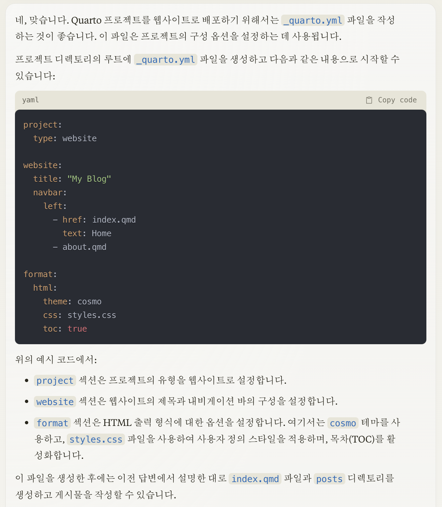
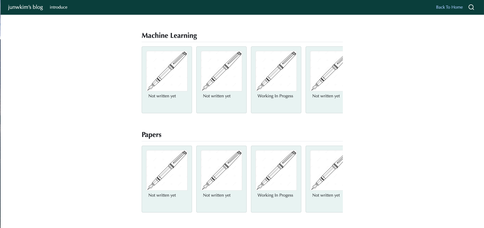
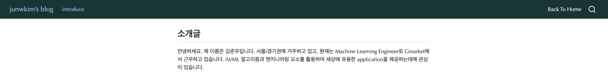
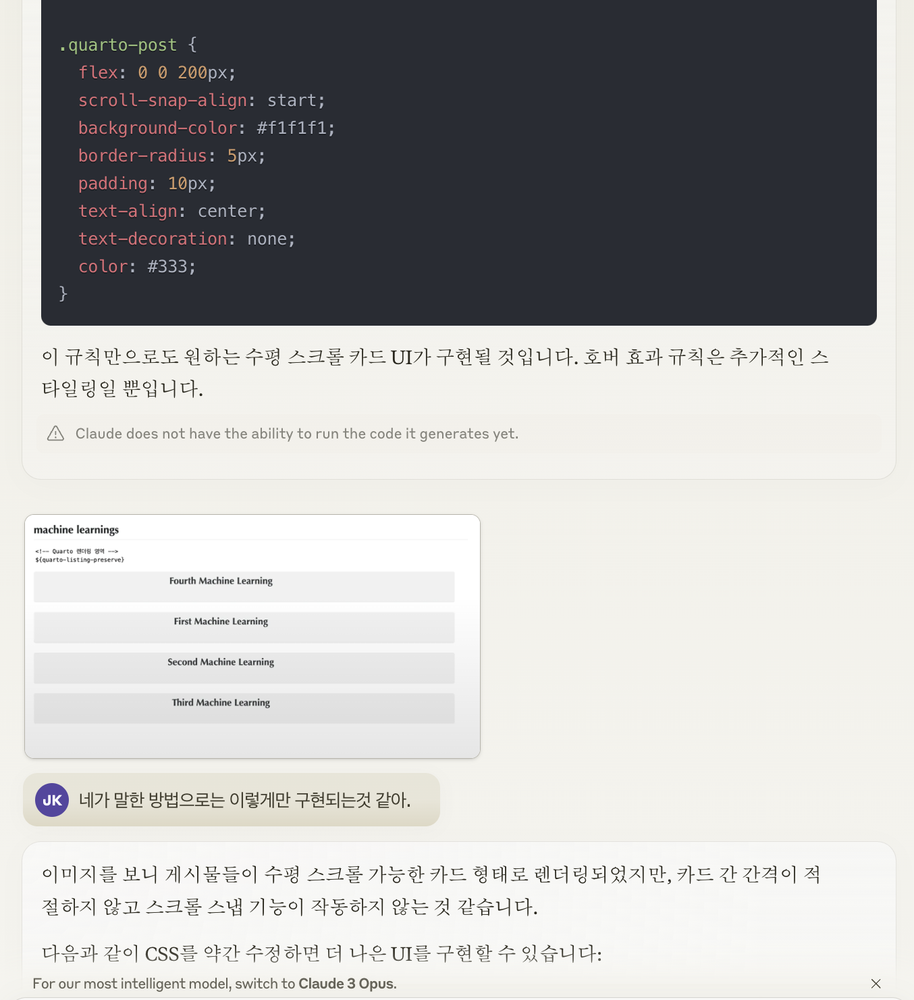
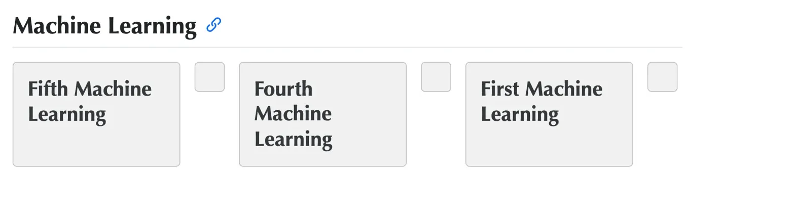

GPTs Service로 개인블로그 만들기
Claude3만으로 Quarto 기반 블로그 만들기
개요
오랫동안 notion, confluence wiki 등 많은 블로그 서비스를 시도해 왔습니다. 어떤 도구는 지나치게 자유도가 높고 어떤 도구는 자유도가 낮은 대신 많은 기능을 제공했지만, 오히려 그게 불편해져서 그 중간 사이 어딘가의 포스팅 도구를 찾았습니다.
마침 같은 팀에서 근무하는 분이 Quarto를 추천해주셨고, 이를 활용해 블로그를 개발할 때 Claude3(Opus, Sonnet)을 적극적으로 사용했는데 아마도 직접적으로 프론트업계에 종사하지 않는 엔지니어/과학자 분들에게 도움이 될까 싶어 그 과정을 남깁니다.
Quarto 소개
Quarto 데이터 사이언스 홈페이지에서는
“Quarto 는 Pandoc에 기반한 오픈소스 과학기술 출판시스템이다. 하지만 특정 언어에 종속되지 않고 R, 파이썬, 쥴리아, 자바스크립트(Observable JS) 를 지원하고 있으며 이를 통해 다음 출판 저작물 작성이 가능하다.”
라고 설명하고 있습니다. 개인적으로는 깔끔한 Layout을 제공하고, 마크다운 문법을 기반으로 동작하며 필요시에는 어렵지 않게 커스터마이징 할 수 있다는게 가장 큰 장점으로 생각합니다.
Install
Quarto 홈페이지에 들어가서 Get Started 탭을 누르면 자신의 환경에 따라 설치할 수 있는 가이드를 제시해줍니다. 구글링으로 검색하면 여러가지 terminal command를 제시해주지만 해당 문서에서 가이드하는대로 시도하는게 가장 좋습니다. 저는 MacOS 유저이고, 터미널에서 vanilla vim으로 작업을 좋아하기 때문에 Quarto를 설치하기만 했습니다.
- https://quarto.org/docs/get-started/
첫 화면
Quarto를 사용하면 가장 먼저 _quarto.yaml을 작성해야합니다. 사실 글 제목인 Claude에게 물었을 때는 main.qmd를 먼저 작성하라고 안내해줬지만, 지금 작업하는 것이 웹페이지로 배포하기 위함이라는 사실을 인지시켜주면 다음과 같이 답변해줍니다.

실제로는 저는 다음과 같은 _quarto.yml을 작성했습니다.
project:
type: website
preview:
port: 4200
website:
title: "junwkim's blog"
description: "technical writing about CS/CE"
navbar:
background: "#0a3e3c"
foreground: White
left:
- href: pages/introduce.qmd
text: introduce
right:
- href: main.qmd
text: Back To Home
format:
html:
css: styles.css
js: script.js위 yaml 파일에서 명시하는 것은 다음과 같습니다.
- 페이지의 이름은 “junkim’s blog” 일 것
- Navigation Bar 설정
- Navigation Bar의 색상은 Dark Teal(#0a3e3c) 일것
- introduce page를 왼쪽, Back To Home page를 오른쪽에 둘 것.
한편, _quarto.yml 기반으로 동작하는 quarto application은 index.qmd 를 가장 먼저 보도록 설정되어 있습니다. index.qmd 파일은 다음과 같이 작성해주었습니다.
---
pagetitle: "Home"
---
```{=html}
<meta http-equiv="refresh" content="0; url='./main.html'" />index.qmd에서는 홈의 가장 기본으로 바라보는 페이지가 main.qmd에서 그려주는 형상이 되도록 지정했습니다. 따라서 블로그의 어디에서든 홈에 접속한다면 main.qmd가 그려주는 페이지로 진입하게 됩니다.

세부 화면 구성
보시면 아시겠지만, 지금 보는 화면은 저희가 작성한 것보다는 좀더 많은 내용들이 추가가 되어 있습니다. 먼저 introduce라는 페이지를 구성하겠습니다.
---
title: ""
format:
html:
toc: false
---
## 소개글
안녕하세요. 제 이름은 김준우입니다.
서울/경기권에 거주하고 있고, 현재는 Machine Learning Engineer로 Gmarket에서 근무하고 있습니다. AI/ML 알고리즘과 엔지니어링 요소를 활용하여 세상에 유용한 application을 제공하는데에 관심이 있습니다.이렇게 작성한 마크다운 문법은 다음과 같이 나타납니다. 
이어서, 홈화면에 나타난 카드 횡스크롤 방식의 UI를 구현해보겠습니다. 요즘 넷플릭스처럼 콘텐츠를 가로로 스크롤하며 제공해주는 방식의 UI가 매우 유행하고 있습니다. 제가 생각하기로는 콘텐츠가 아주 많아진 요즘 시대에는 거의 필수에 가까울 것으로 생각되는 디자인 요소 중 하나라고 생각합니다.
Quarto에서는 내가 작성한 게시글들이라는 콘텐츠를 Listing해서 보여주는 기능이 있습니다. 홈페이지에서 제공하는 document에서 다양한 형식의 quarto content 작성방식을 제공하고 있습니다.
- https://quarto.org/docs/reference/projects/websites.html#project
위 링크에서 Listing 항목을 살펴보면 어떤 콘텐츠를 담을 것인지, List의 이름은 무엇으로 할 것인지, 최대로 보여줄 콘텐츠의 갯수, 정렬방식을 지정할 수 있음을 알 수 있습니다. 특히, type 항목에서 List 혹은 Grid를 지정할 수 있습니다. 물론 List와 Grid 또한 충분히 이쁜 UI지만 저희가 하고 싶은 것은 횡스크롤 형식의 카드UI입니다.
listing:
- id: "list1"
contents: pages/posts
sort: "date asc"
type: custom
categories: false
sort-ui: false
filter-ui: false
feed: false
template: listing.ejs저는 실제로는 문서정독을 통해 EJS(Embedded JavaScript)라는 기능을 통해 사용자가 직접 정의한 UI를 입힐 수 있음을 파악했지만, 갖은 노력을 다해도 도저히 구현할 수 없었습니다. 그래서 Claude에게 다시한번 물어보았습니다. Claude는 EJS 문법 작성과 CSS파일 생성을 거의 대부분 수행하였지만, 사소한 오류와 에러들이 있었고 이를 바로 잡는데에 대부분의 시간을 보냈습니다.

현존 GPTs 서비스 중 가장 강력하다고 알려진 Claude 또한 이미지 입력까지 제공받았음에도 유료 API Quoto를 3번이나 소진할 떄까지 올바른 방법을 제시하지 못했습니다. 그러던 중 클로드가 다음과 같은 제안을 해왔습니다.
- style.css
.card-container {
display: flex;
overflow-x: auto;
scroll-snap-type: x mandatory;
scroll-padding: 1rem;
}
.card {
flex: 0 0 200px;
margin-right: 1rem;
padding: 1rem;
background: #f1f1f1;
border-radius: 5px;
scroll-snap-align: center;
text-decoration: none;
color: inherit;
display: flex;
flex-direction: column;
}
.card h3 {
margin: 0;
}- listing.ejs
<div class="card-container">
<% for (const post of collections.all.pages/posts) { %>
<a href="<%= post.url %>" class="card">
<h3><%= post.data.title %></h3>
</a>
<% } %>
</div>위 코드를 적용하자, 드디어 초기에 제가 원하던 컨셉과 비슷한 화면 view가 생성되었습니다! 
한번 기능이 완성되고 나서부터는 원하는 UI를 구현하는 것은 비교적 빠르게 수행 가능했습니다. 사소한 디버깅이나 레이아웃을 수정하는 오류는 claude를 통해 해결하였고, 추가적인 style 변화를 위해 몇가지 요소를 추가했습니다.
.card-container {
display: flex;
overflow-x: auto;
scroll-snap-type: x mandatory;
scroll-padding: 1rem;
}
.card {
width: 200px;
height: 265px;
margin-right: 1rem;
padding: 1rem;
background: #e0f2ef;
border-radius: 5px;
scroll-snap-align: center;
text-decoration: none;
color: inherit;
display: flex;
flex-direction: column;
box-sizing: border-box;
position: relative;
}
.card-text {
display: -webkit-box;
-webkit-line-clamp: 3;
-webkit-box-orient: vertical;
overflow: hidden;
text-overflow: ellipsis;
word-break: break-word;
line-height: 1.2;
max-height: calc(1.2em * 3);
margin: 0.5rem;
}
.card-image {
width: 100%;
height: 160px;
marin: 1rem;
border-top-left-radius: 5px;
border-top-right-radius: 5px;
border: 1px solid #e0e0e0;
}적용한 카드 스타일은 다음과 같습니다.
- card container를 통해 횡 scroll UI를 구현
- card style 정의를 통해 가로/세로 높이와 카드 배경색 조정, 테두리 둥근 효과 등을 부여
- card-text style 정의를 통해 카드 내부의 text는 어떤 높이에서 시작하고 어디까지 표시될지, 표시영역을 벗어나면 어떻게 처리될지를 정의
- card-image style 정의를 통해 카드 내부에 이미지가 표기되도록 하고, 해당 이미지의 여러 특성을 정의
정리하며
이러한 작업을 하면서 놀라운 부분은, 저는 프론트에 대해서는 아주 기본적인 내용들만 알고 있었을 뿐임에도 Claude와 함께 상호작용하며 저만의 멋진 블로그를 만드는데에 그렇게 큰 힘이 들지 않았다는 것입니다. 뿐만 아니라, 제가 작성한 대부분의 코드는 Claude가 생성해 준 것이고 제가 고려한 부분은 디자인적 요소 외에는 거의 없었다고 봐도 무방할 것 같습니다.
만약 이 글을 읽으시는 독자분께서 블로그는 갖고 싶지만 프론트를 잘 모르신다고 한다면, Claude를 기반으로 아주 맨땅에서부터 헤딩해도 좋은 결과물을 얻을 수 있을 것이라 생각합니다. 끝으로, 여태까지 작업한 코드는 다음 github에서 참고하실 수 있습니다.
- https://github.com/junwoo-ctrl/junwkim-blog-quarto